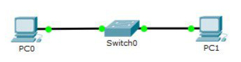

artyom
View project on
GitHub
ГЛАВНАЯ
НАСТРОЙКА ЛОКАЛЬНОЙ СЕТИ ПЕРЕДАЧИ ДАННЫХ
Цель работы: Настройка коммутаторов и маршрутизаторов
Задание
1. Разместить на рабочем поле коммутатор и два компьютера и соединить их
2. Подключить консольный кабель для настройки оборудования
3. Настроить адресацию на добавленных компьютерах согласно таблице без шлюза по умолчанию
4. Выполнить проверку работоспособности сети
5. Добавить на рабочее поле еще один коммутатор с двумя компьютерами и настроить адресацию из другой подсети
6. Соединить коммутаторы между собой и проверить работоспособность сети
7. Добавить маршрутизатор на рабочее поле
8. Настроить интерфейсы маршрутизатора для существующих подсетей
9. Проверить работоспособность сети
10. Указать шлюз по умолчанию и отправить сообщение
Ход работы:
1. Рассчитать IP-адрес
2. Настроить адресацию между двумя узлами и коммутатором
3. Добавить оборудование и произвести настройку
4. Настроить статическую маршрутизацию при помощи команды: ip route [сеть назначения] [маска] [маршрут]
5. Установить банер на сетевое оборудование: banner motd [баннер]

Вывод
В ходе выполнения работы была проведена базовая настройка сетевого оборудования